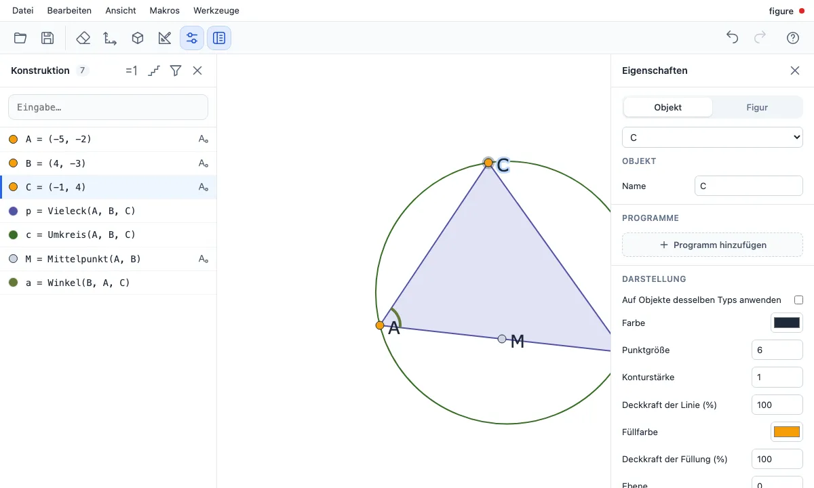
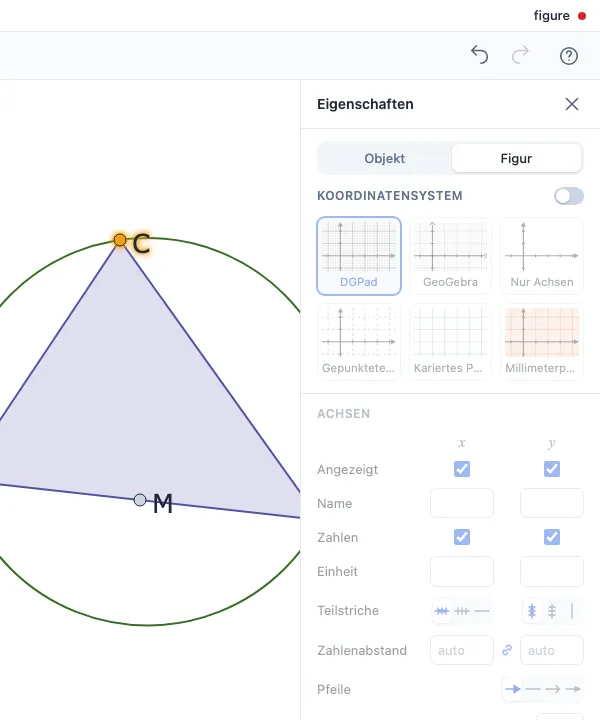

Eigenschaften und Koordinatensystem

Das Feld
- Geöffnet mit oder mit im Kontextbereich; geschlossen mit seinem Kreuz, derselben Schaltfläche oder Esc.
- Zwei Tabs: Objekt und Figur.
- Das einzustellende Objekt wird in der Figur, über seine Zeile oder in der Liste „Objekt wählen…“ gewählt (ausgeblendete Objekte eingeschlossen). Ein Klick in die Figur wählt dort aus, statt zu konstruieren; Schaltflächen und Kästchen werden gewählt, ohne ausgelöst zu werden. Ein Werkzeug des Menüs oder die Eingabezeile konstruieren normal, und das erzeugte Objekt erscheint im Feld.
- Änderungen wirken sofort und lassen sich rückgängig machen.
- Zahlenfelder: Waagerechtes Ziehen stellt den Wert ein (Umschalt: zehnmal feiner), ein Klick erlaubt das Eintippen. Ein Ziehen zählt als ein einziger Rückgängig-Schritt.
- Eine Schaltfläche ↺ neben einer Farbe setzt sie auf die Standardfarbe des Werkzeugs zurück.
Der Tab „Objekt“
| Abschnitt | Einstellungen |
|---|---|
| Objekt | Name; bei einem Ausdruck die Definition |
| Darstellung | auf Objekte desselben Typs anwenden, Farbe, Punktgröße, Linienstärke, Kontur, Deckkraft von Linie und Füllung, Füllfarbe, gestrichelt, Ebene (Zeichenreihenfolge) |
| Anzeige | Objekt sichtbar, Name anzeigen, Textgröße, Dezimalstellen des Werts (oder nicht anzeigen) |
| Punkt | Form (Kreis, Quadrat, Kreuz, Raute), Position des Namens in Grad, Spur, horizontale und vertikale Schrittweite (Bewegung in Sprüngen) |
| Strecke | Markierung (Striche für gleiche Längen) |
| Winkel | Radius des Bogens, Markierung des rechten Winkels (offenes Winkelzeichen, Bogen, Quadrat, Punkt, Winkelzeichen) |
| Ortslinie, Liste | Anzahl der Punkte; Linienstärke der Strecken |
| Schieberegler | Schrittweite, Länge, vertikal, Farbe und Größe des Griffs |
| Animation | Geschwindigkeit (0: Stopp), umgekehrte Richtung, am Ende: neu beginnen, hin und her oder anhalten |
Mehrere Objekte
Bei einer Mehrfachauswahl werden nur die allen gemeinsamen Einstellungen angezeigt; ein Wert, der von Objekt zu Objekt verschieden ist, steht grau und kursiv. Strg-Klick, Umschalt-Klick oder langes Drücken (Figur oder Feld „Konstruktion“) fügen ein Objekt hinzu oder entfernen es.
Der Tab „Figur“

Ein Klick auf eine Achse öffnet diesen Tab.
| Abschnitt | Einstellungen |
|---|---|
| Koordinatensystem | angezeigt oder nicht; Vorlagen DGPad, GeoGebra, nur Achsen, gepunktetes Gitter, Karopapier, Millimeterpapier (nur Darstellung, weder Zoom noch Hintergrund) |
| Achsen (x und y) | angezeigt, Name, Zahlen, Einheit (π: Vielfache von π/2), Teilstriche, Zahlenabstand (leer: auto; 🔗 verbindet x und y), Pfeile, Farbe, Größe und Fettdruck der Zahlen, Stil DGPad oder GeoGebra, positive Halbachsen |
| Gitter | angezeigt oder nicht, Linienabstand, Unterteilungen, Farbe (standardmäßig die der Achsen), Dicke, Linie durchgezogen, gepunktet oder gestrichelt |
| Zoomen und Verschieben | Achse am Bildschirm fixiert, um den Ursprung zoomen |
| Figur | Hintergrund; Winkel in Grad (Standard) oder im Bogenmaß; Strecken über Polygonen |
In 3D
| Abschnitt | Einstellungen |
|---|---|
| Achsen | Dreibein angezeigt, Farbe, Linienstärke |
| Boden | angezeigt, Farbe (↺: oben blau, unten braun), Deckkraft, Größe, Abstand, Farbe und Stärke der Linien |
| Ansicht | Perspektive |
Diese Einstellungen lassen sich rückgängig machen; Zoomen, Verschieben und Drehen der Ansicht nicht.